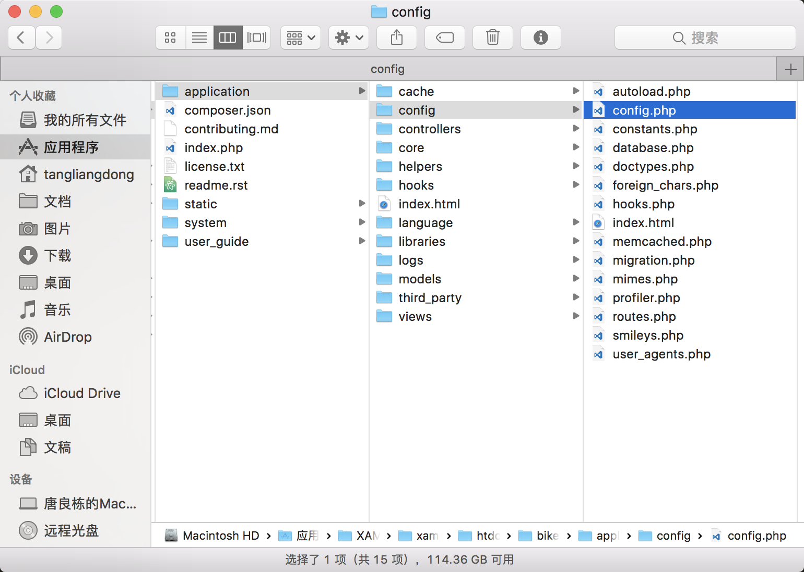

php CodeIgniter框架
CodeIgniter框架
这个框架具有mvc的思想，而且方法的url映射的方式很类似java spring mvc。
具体查看可以CodeIgniter文档
base_url和site_url
如何在页面中使用配置文件中设置的静态文件路径和访问的url，先找到CodeIgniter根目录下 application->config->config.php

里面的base_url是自带的，这是在引入静态文件时用的，我们还可以再加入一个site_url配置，用来在提交表单或者ajax异步提交数据时url的根路径。
1 | $config['base_url'] = 'http://localhost/bikeShare'; |
当然如果我们要在页面上使用 site_url或 base_url，我们需要在使用这两个的地方的控制器里先通过 $this->load->helper(array('url')) 引入。如下：
1 | // controllers/Login.php |
登录页面
1 | <!-- login/login.php --> |
处理登录的界面
1 | // controllers/Login.php |
获取表单传值
获取表单项的值可以通过如下的方法，根据 提交的类型是 post 或是 get 来进行选择。
1 | $this->input->post('name'); |
使用model类里的方法
对数据库的操作都放在 models文件夹下，假如需要调用 UserModel.php里的方法时，可以通过
1 | $this->load->model('userModel'); |
给页面传入数据
显示 views文件夹下的页面，
1 | $this->load->view('user/list'); |
若是想在页面里面传入数据，类似java的Model，可以在view()方法里加入第二个参数,如下，这样就可以将关联数组data传入页面。
1 | $data = array('username'=>'小唐','studio'=>'betahouse'); |
生成json字符串 json_encode
由于json只接受utf-8编码的字符，所以json_encode()的参数必须是utf-8编码，否则会得到空字符或者null。当中文使用GB2312编码，或者外文使用ISO-8859-1编码的时候，这一点要特别注意。
若是需要返回json的字符串，则需要用 json_encode()方法，该方法可以将数组或对象转成json字符串。
1 | // 直接向前端输出json字符串就行 |
由于javascript不支持关联数组，所以json_encode()只将索引数组（indexed array）转为数组格式，而将关联数组（associative array）转为对象格式。
1.若是传入索引数组，则 json_encode()会将索引数组转成数组格式。
1 | $arr = Array('one', 'two', 'three'); |
2.若是传入的是关联数组，则 json_encode()会将关联数组转成对象格式。
1 | $arr = Array('1'=>'one', '2'=>'two', '3'=>'three'); |
解析json字符串 json_decode()
1 | $json = json_decode('{"info": "nice"}';) |
通常情况下，json_decode()总是返回一个PHP对象，而不是数组。
如果想要强制生成PHP关联数组，json_decode()需要加一个参数true：
1 | $json = {"1":"one","2":"two","3":"three"}; |